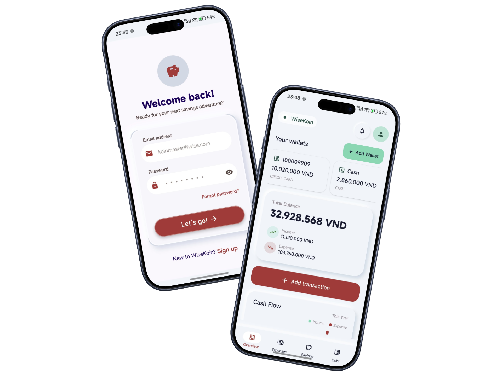

Your everyday money companion
See the story behind every đồng.
Track daily spending, plan meaningful savings goals, and review smart transaction
suggestions in one calm Android experience.
A personal recordkeeping tool—not a bank, payment processor, or investment service.

↗
One clear viewWallets, cash flow, and recent activity
✓
You stay in controlReview suggestions before saving
01 Built for Android
02 Review before save
03 No real-world money movement
04 Account-owned records
A clearer financial routine
Less mental math.
More forward motion.
WiseKoin brings the moving parts of personal money management together without turning
your life into a spreadsheet. Record what happened, understand the pattern, and decide
what comes next.
Know where you stand
Your money, without the noise.
Keep internal wallet balances, income, expenses, and transfers organized. The
overview turns your latest records into an at-a-glance cash-flow story.
- Organize records by wallet and category
- Review recent activity from one dashboard
- Keep transfers separate from income and spending
Plan something worth saving for
Turn a big goal into visible progress.
Give each savings goal a name, target, and deadline. Fund it over time and see how
today’s choices move you closer to what matters.
- Track multiple goals side by side
- See funded amounts and progress clearly
- Record debts and repayments alongside your plan
03
A home for everyday records
Simple enough to keep using.
Sign in to an account-scoped workspace, add wallets, and build a financial record
that reflects your routine. Recurring expenses can create scheduled ledger entries
automatically.
- Account-based access with security verification
- Flexible wallet and category organization
- Recurring internal expense entries
Smart input, human decision
Let the app do the first pass. You make the final call.
01
Capture
Choose a receipt image, record a short voice note, or enable supported finance-app notification suggestions.
02
Review
WiseKoin proposes transaction details. Check the amount, date, wallet, and category before anything is saved.
03
Confirm
Only your confirmation creates a transaction. Suggestions can be corrected, dismissed, or left unsaved.
Inside WiseKoin
The essentials, thoughtfully connected.
◎
Wallets & cash flow
Keep an internal record of balances, income, expenses, and transfers.
◇
Savings goals
Set a target and make progress visible.
↔
Debt records
Track amounts you lend or borrow and record repayments over time.
✦
AI-assisted capture
Turn a receipt or voice note into a suggestion you can inspect and edit before saving.
Review required
Clarity includes your data
Know what happens before you tap confirm.
WiseKoin’s policy explains how account records, optional media, notification-derived
suggestions, diagnostics, and support feedback are handled—and where third-party
providers are involved.
Read the Privacy Policy
A calmer view of your finances
Make your numbers
make sense.
Track the present. Plan the next move. Keep the final decision yours.